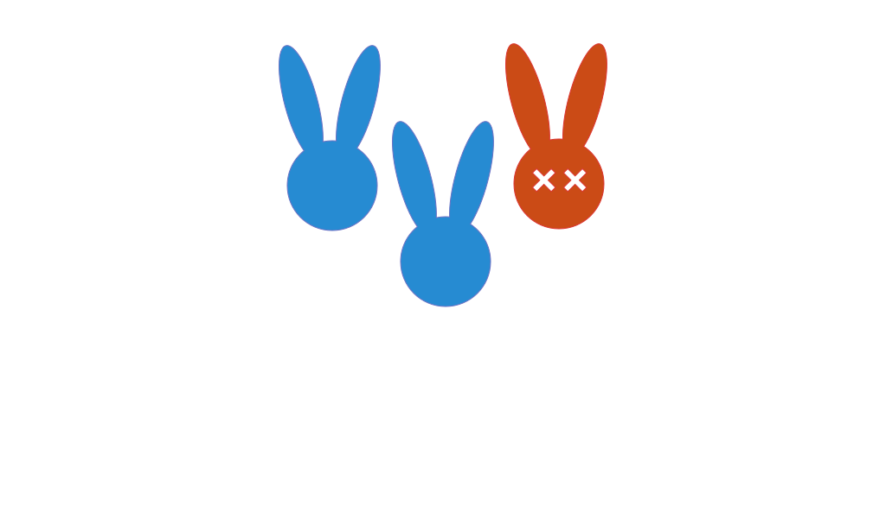
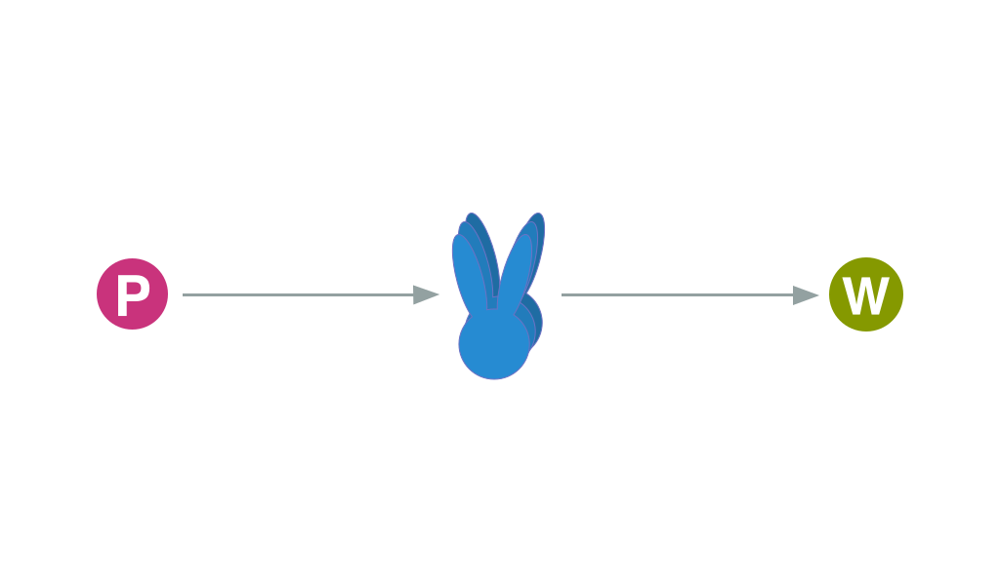
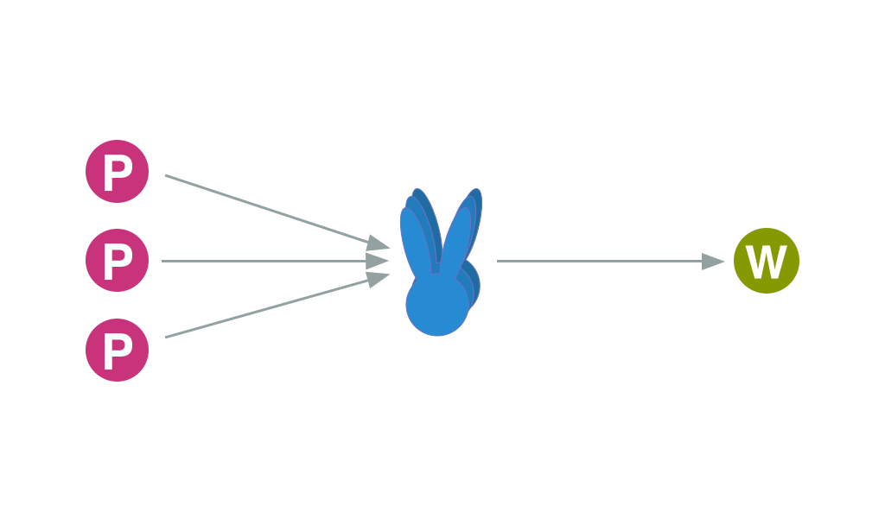
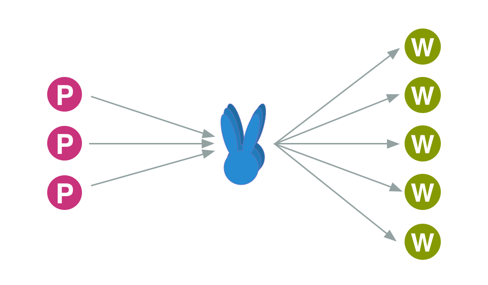
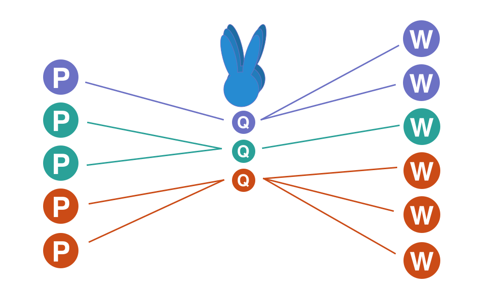

RabbitMQ
- Fast
- Clusterable
- not Master/Slave!
- Speaks AMQP
- Langauage Support
- Easy
Uses
- Load Balancing
- Connection Pooling
- Log Management
Fault Tolerant

Fault Tolerant
Clusterable: N + 1
Fault Tolerant
Can loose nodes, keeps working
Fault Tolerant
Scales horizontally
Scale Horizontally
Dynamically grow parts of infrastructure
Scale Horizontally
Add more Producers
Scale Horizontally
Add more Workers
Isolate Concerns
Keeps things safe
